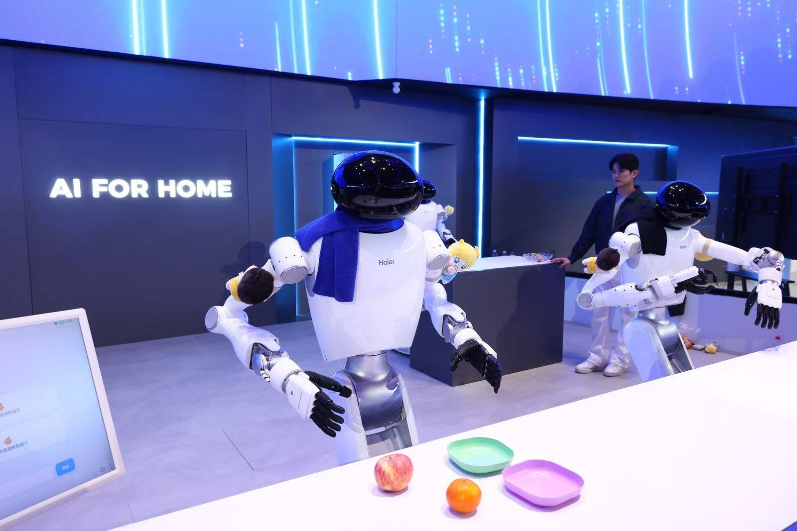

1
竞品动态 · 家庭具身智能
海尔、美的、格力集体加码具身智能：家电企业开始抢家庭机器人入口
家电巨头的机器人路线正在分化：海尔主打家庭服务，美的走工业与家庭双线，格力强调自研制造能力。

新浪科技转载快科技消息称，今年海尔、美的、格力都把布局重点延伸到具身智能。海尔发布“海娃”家务、清洁、陪伴三类家庭服务机器人；美的既有面向工业的“美罗 U”，也在测试家庭“美拉”系列；格力则强调整机和零部件自研自产。
报道还提到，海信、TCL、科沃斯、方太等家电企业也在今年展示具身智能产品，形态覆盖家务、清洁、陪伴、烹饪等方向。家电企业的优势在渠道、场景和供应链，但真正进入家庭还要跨过成本、稳定性和用户信任门槛。
小编有话说这条不是单纯“机器人热”，而是竞品边界在变。未来厨房的对手可能不只是一台烟机或蒸烤箱，而是能接管家务、清洁和陪伴任务的家庭智能体。